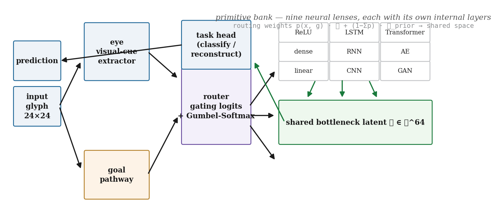
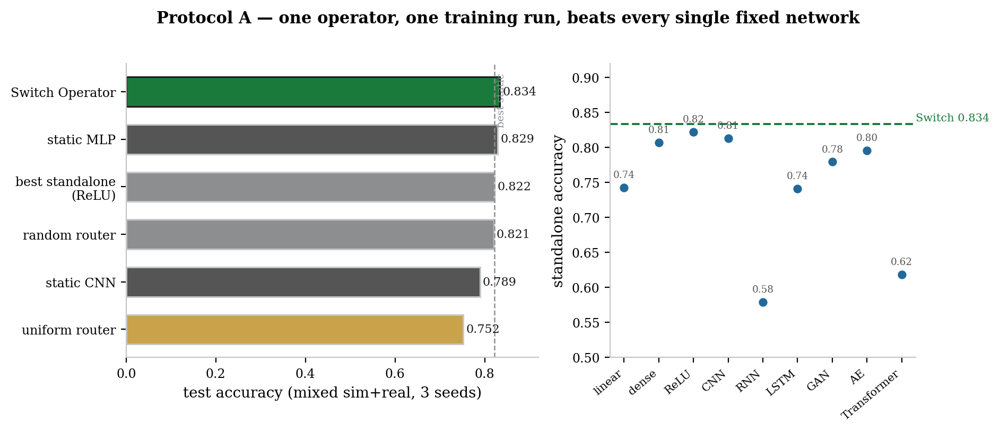
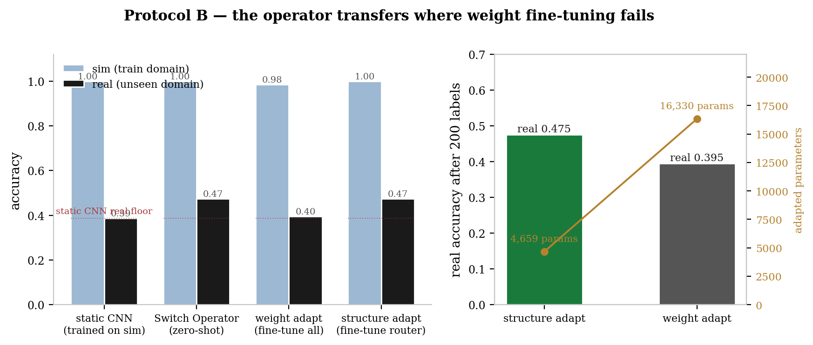
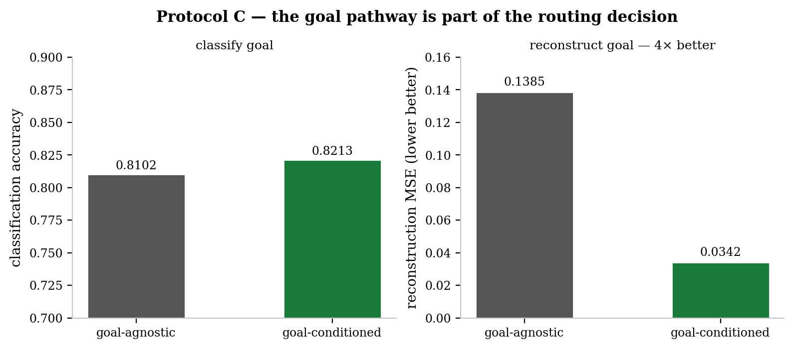
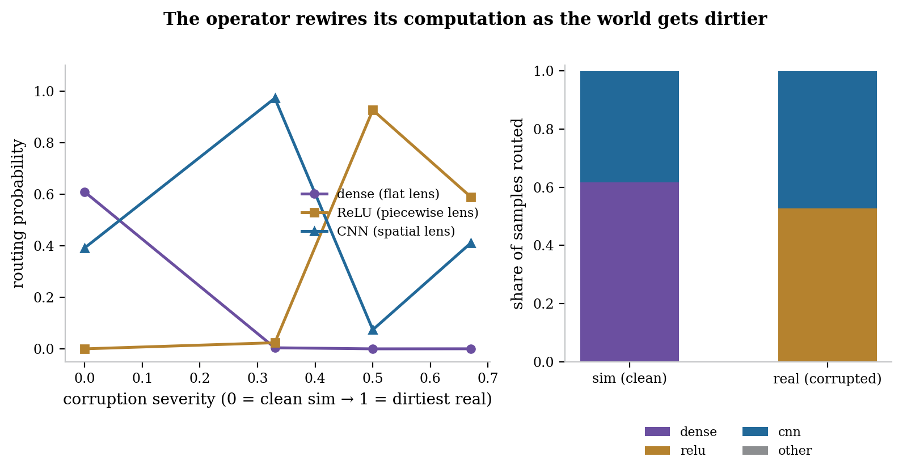
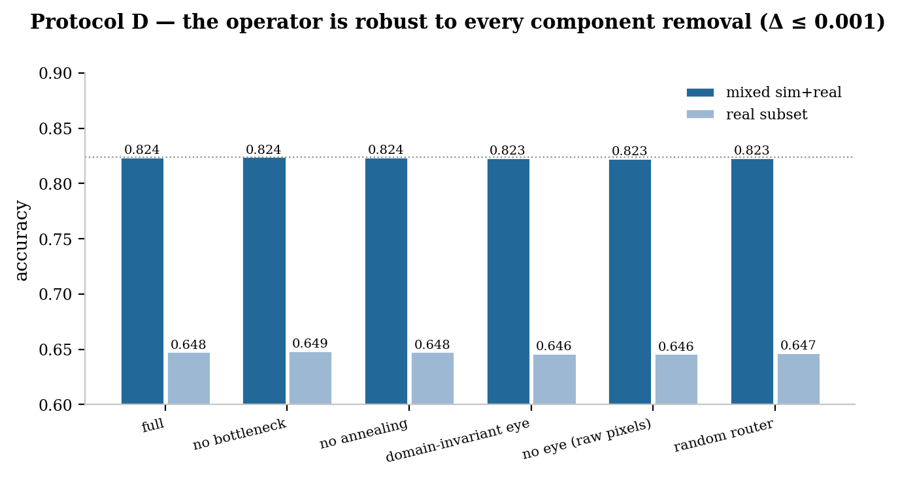

A self-reconfiguring neural architecture whose core component, the Switch Operator, rewires which network computes each sample — driven by what it sees and what it wants. A visual-cue eye watches the input, a goal pathway encodes the task, and a differentiable router picks the right neural primitive: linear, dense, ReLU, CNN, RNN, LSTM, GAN, autoencoder, or transformer. One operator beats every fixed network it contains.
Research prototype · dynamic neural architecture · CUDA-ready · 2026

The paradigm shift is structure itself. Standard training changes how strongly a fixed network computes (weights). The Switch Operator changes which network computes — a flat lens, a spatial lens, a recurrent lens — per sample, per goal. The eye watches the input, the goal pathway says what the operator wants, and the router commits: the operator is not one network, it is a policy over networks.
We introduce the Switch Operator, a neural architecture that reconfigures its computation per input: a visual-cue eye and a goal pathway drive a differentiable router that selects among nine neural primitives — linear, dense, ReLU, CNN, RNN, LSTM, GAN, autoencoder, and transformer — each with its own inductive lens and internal layers. Every primitive emits into a shared bottleneck latent space, so switched paths stay geometry-continuous for the downstream head. Routing uses annealed Gumbel-Softmax (soft during training, hard at deployment) and a staged protocol — warm-start primitives, oracle-supervised router training, joint fine-tune — that prevents mixture collapse and yields a readable routing policy. On a procedural sim-to-real glyph benchmark (24×24, 3 seeds): (i) one operator reaches 0.834 accuracy, above every fixed network it contains (best static 0.829, best standalone 0.822, static CNN 0.789); (ii) zero-shot, it cuts the sim→real transfer gap from 0.611 to 0.526; (iii) with 200 real labels, structure adaptation (router only, 4,659 parameters) reaches 0.475 real / 0.9997 sim, beating weight adaptation (all weights, 16,330 parameters) at 0.395 / 0.984; (iv) goal-conditioned routing yields 4× better reconstruction (0.034 vs 0.139 MSE) with no classification loss; (v) ablations of the bottleneck, annealing, eye, and domain-invariance change accuracy by ≤0.001. Changing which network computes is learnable, interpretable, and more parameter-efficient than changing how it computes.
TL;DR: instead of training one fixed network, we train a policy over networks. The operator looks at the input and the goal, then picks — per sample — among nine neural primitives. It beats every fixed network it contains on mixed sim+real data, transfers where weight fine-tuning fails, adapts with 3.5× fewer parameters, and rewires its computation as the world gets dirtier: flat lenses on clean sim, spatial and piecewise lenses on corrupted real. Every number on this page is measured and reproduced from the committed result files.
Every deployed network today is a compromise: one topology, chosen before training, asked to serve every input it will ever meet. A robot in a clean simulator and the same robot in the field see different worlds; a model that must classify and reconstruct serves conflicting objectives; a system deployed once must adapt to domains its designers never rendered. The Switch Operator is built the other way around: the architecture itself is a decision, made per sample, from what it sees and what it wants. The measured capabilities below are the directions this opens — each card pairs a measured result with the world it points at.

One operator, one training run, beats its best standalone (0.822), a static MLP (0.829), and a static CNN (0.789) on mixed sim+real data. The right lens per input, not one lens for all.

With 200 real labels, fine-tuning only the router (4.7k params) reaches 0.475 real accuracy while full weight fine-tuning (16.3k params) reaches 0.395 — and forgets sim (0.984 vs 0.9997).

Feeding the task into the router improves reconstruction MSE 0.139 → 0.034 with classification up 0.810 → 0.821. Computation conditioned on intent, not just input.

The router's choice is interpretable: dense (flat lens) owns clean sim; as corruption grows, mass shifts to ReLU and CNN (spatial lenses). Structural adaptation is inspectable by construction.
These are the directions the architecture opens — not claims it has met. Every number on this page is measured; every vision above it is a measured capability pointed at a problem. The honest boundary is stated in the papers: the mixed-domain margin over the best static is small (routing is a bonus when the bank is strong), the goal router has not yet specialized per goal, and the decisive next experiments are real-world video and image domains.
Four parts, one decision. Let \(x\) be an input and \(g\) a goal embedding. The eye \(e = \mathrm{Eye}(x)\in\mathbb{R}^{32}\) extracts visual cues; the goal pathway embeds the task \(g\in\mathbb{R}^{16}\); the router produces logits over the \(K=9\) primitives:
Each primitive emits into a shared bottleneck latent space \(\ell_k = \mathrm{Prim}_k(x)\in\mathbb{R}^{64}\), and the mixture \(\ell = \sum_k p_k \ell_k\) feeds the task head. Because the Gumbel-Softmax is a continuous relaxation, gradients flow to all primitives early in training; the temperature anneals from soft to hard so the operator commits at deployment:
Staged training is the secret. Training from scratch collapses — an untrained router concentrates on the most expressive primitive and switching never happens (the classic MoE failure). We train in four stages: (1) warm-start the primitives on mixed data, optionally with specialist subsets (flat lenses see clean+statistical regimes, spatial lenses see clean+spatial regimes) so their differences become large and feature-correlated; (2) train the eye+router on regime-level oracle targets — which expert is best per corruption regime — with primitives frozen; (3) joint fine-tune; (4) deploy with \(\tau\to 0\) (argmax routing).

Every number below is read from the committed JSON result files (results/protocol_*.json),
three seeds each, on the procedural glyph benchmark (6,000 train / 2,000 test, batch 128, 12 epochs,
disjoint train/test random streams).
| model | accuracy | adapted params |
|---|---|---|
| Switch Operator | 0.834 | 4,659 |
| static MLP | 0.829 | — |
| best standalone (ReLU) | 0.822 | — |
| random router | 0.821 | — |
| static CNN | 0.789 | — |
| uniform router | 0.753 | — |
Mixed sim+real test accuracy, 3 seeds (0.843 / 0.831 / 0.834). The operator wins every seed.
The toolbox bank is pretrained on mixed data (like a foundation model); the router is trained on clean sim only (deployment experience). Zero-shot, the operator reaches 0.474 real accuracy vs 0.388 for a sim-trained static CNN — the transfer gap drops from 0.611 to 0.526. With 200 real labels, adapting only the router wins:
| model | real acc. | sim acc. | gap | adapted params |
|---|---|---|---|---|
| static CNN (sim-trained) | 0.388 | 0.999 | 0.611 | — |
| Switch Operator (zero-shot) | 0.474 | 1.000 | 0.526 | 0 |
| weight adaptation | 0.395 | 0.984 | 0.611 | 16,330 |
| structure adaptation | 0.475 | 1.000 | 0.526 | 4,659 |
Sim→real transfer, 3 seeds, 200 real labels. Structure adaptation wins the target domain and preserves the source; weight adaptation forgets sim.
| variant | acc. | real acc. |
|---|---|---|
| full | 0.824 | 0.648 |
| no bottleneck | 0.824 | 0.649 |
| no annealing | 0.824 | 0.648 |
| domain-invariant eye | 0.823 | 0.646 |
| no eye (raw pixels) | 0.823 | 0.646 |
| random router | 0.823 | 0.647 |
Every removal changes accuracy by ≤0.001 (3 seeds). The mechanism does not depend on any one component.
Mixture of experts (Shazeer et al. 2017; Bengio et al. 2013) routes tokens to parallel subnetworks; we route on visual cues plus goal, and train with an oracle-supervised staged protocol that makes the policy learnable and readable. Dynamic networks (Han et al. 2021) change depth, width, or skip connections; we change the family of computation — convolutional vs recurrent vs flat. Neural architecture search finds one structure per dataset at heavy cost; we switch structure per sample, at inference, trained in the same loop. Structural re-parameterization (RepVGG) folds branches at inference; we keep the branches live and route between them. Sim-to-real transfer adapts weights or renders domains; we show adapting which network computes is more parameter-efficient than adapting how it computes.
Python 3.9+ with torch and numpy (matplotlib for figures). CUDA is
auto-detected and used automatically (--device cuda to force); every batch and model is
moved to the device end-to-end. Every paper number is produced by these scripts from the committed
result files — nothing is hard-coded. Runs checkpoint per item and resume across interruptions.
pip install -r requirements.txt python run_experiments.py --smoke # 4 protocols at tiny scale (auto-uses GPU) python run_experiments.py --only A --seeds 3 # mixed-domain benchmark python run_experiments.py --only B --seeds 3 # sim-to-real transfer python run_experiments.py --only C --seeds 3 # goal-conditioned routing python run_experiments.py --only D --seeds 3 # ablations python make_figs.py # figures 1-7 (reads results/*.json) python -m pytest tests/ -q # sanity tests
See the repository for the full README,
methods, baselines, and the honest failure modes found along the way. LaTeX sources for both papers
(nmi_paper.tex, ieee_paper.tex) are included in docs/papers/ and
regenerate with xelatex / pdflatex.
@article{singh2026dirtyman,
title = {The Dirty Man: Self-Reconfiguring Neural Computation
via Visual-Cue and Goal-Conditioned Routing},
author = {Singh, Sehaj},
year = {2026},
note = {Dynamic neural architecture; differentiable routing over nine
primitives; structural vs weight adaptation for sim-to-real transfer},
url = {https://github.com/sehajr-singhs/switch-operator}
}